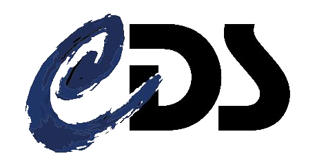
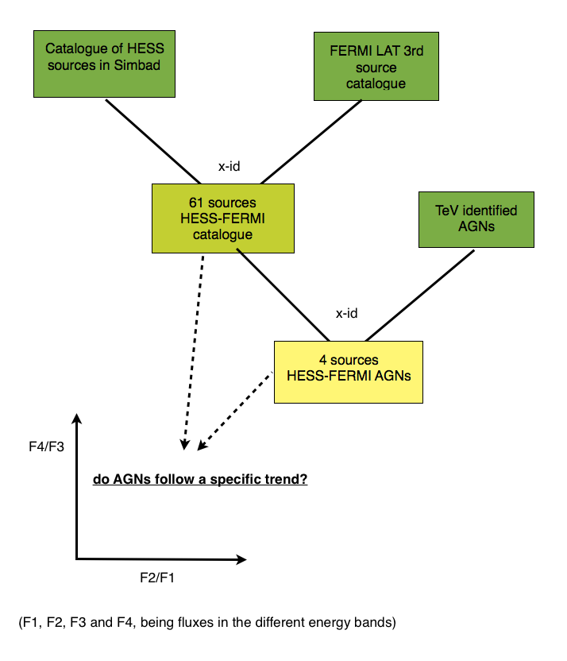
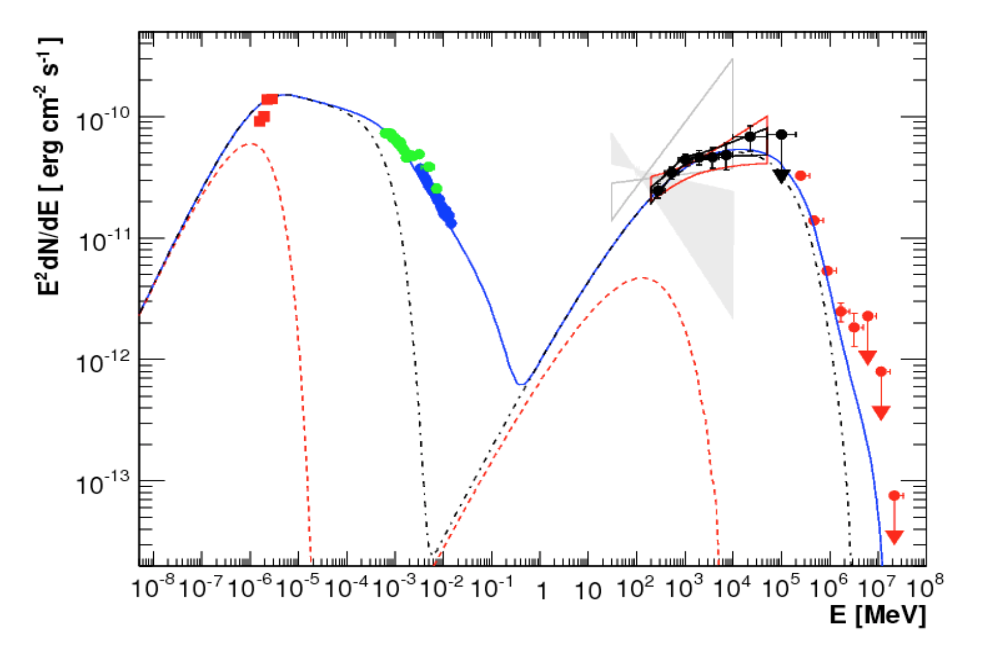

Multi-instrument, multi-wavelength study of high energy sources with the Virtual Observatory#
François Bonnarel¹, Caroline Bot¹, Françoise Genova¹, René Goosmann¹, Manon Marchand¹, Ada Nebot¹.
Université de Strasbourg, CNRS, Observatoire Astronomique de Strasbourg, UMR 7550, F-67000, Strasbourg, France
This Notebook is based on the Euro-VO “Multi-instrument, multi-wavelength study of high energy sources with the Virtual Observatory” tutorial http://www.euro-vo.org/sites/default/files/documents/tutorial-highenergy_2016Nov.pdf.
Developed by Caroline Bot, François Bonnarel, René Goosmann and Françoise Genova. Adapted to a Jupyter Notebook by Ada Nebot.

Introduction#
This tutorial demonstrates how to use several standard tools of the Virtual Observatory (VO) for data mining and multiple waveband data analysis. The step-by-step application below focuses on applications in the gamma-ray and high energy domain, but also involves observational data from other wavebands. The user may explore how to:
query astronomical catalogues in the gamma-ray and high energy spectral band using VO tools
cross-correlate catalogues to find an object at different photon energy bands
apply selection criteria when extracting sources from a catalogue
use the observational measures of the selected objects to explore possible correlations
visualize astronomical images from the radio up to the high energy domain
display spectral energy distributions obtained from different photometric data sets
Schematic view of the scientific rationale of the tutorial:

# Standard Library
from pathlib import Path
# Astronomy tools
from astropy import units as u
from astropy.coordinates import SkyCoord
from astropy.table import Table, hstack, join, unique, vstack
# Access astronomical databases
from astroquery.simbad import Simbad
from astroquery.vizier import Vizier
# Sky visualization
from ipyaladin import Aladin
# For plots
import plotly.express as px
Step #1 - Obtaining all HESS sources from SIMBAD#

How to obtain a catalogue of all published HESS sources from the astronomical database SIMBAD.
The High Energy Stereoscopic System (HESS) is a Cherenkov telescope array detecting cosmic gamma-rays in the GeV—TeV range. Sources detected by HESS include supernova remnants (SNR), wind nebulae pulsars, active galactic nuclei (AGN) and others. The number of detected sources steadily grows and makes it possible to study certain sub-samples of the HESS catalogue. In the following, the HESS sources should be investigated with respect to their gamma-ray properties obtained from the second Fermi-LAT catalogue.
# Check which are the default fields
simbad = Simbad()
simbad.get_votable_fields()
['basic.main_id',
'basic.ra',
'basic.dec',
'basic.coo_err_maj',
'basic.coo_err_min',
'basic.coo_err_angle',
'basic.coo_wavelength',
'basic.coo_bibcode']
# Check the available fields in a Simbad astroquery
simbad.list_votable_fields()
| name | description | type |
|---|---|---|
| object | object | object |
| mesDiameter | Collection of stellar diameters. | table |
| mesPM | Collection of proper motions. | table |
| mesISO | Infrared Space Observatory (ISO) observing log. | table |
| mesSpT | Collection of spectral types. | table |
| allfluxes | all flux/magnitudes U,B,V,I,J,H,K,u_,g_,r_,i_,z_ | table |
| ident | Identifiers of an astronomical object | table |
| flux | Magnitude/Flux information about an astronomical object | table |
| mesOtype | Other object types associated with an object with origins | table |
| mesPLX | Collection of trigonometric parallaxes. | table |
| ... | ... | ... |
| K | Magnitude K | filter name |
| u | Magnitude SDSS u | filter name |
| g | Magnitude SDSS g | filter name |
| r | Magnitude SDSS r | filter name |
| i | Magnitude SDSS i | filter name |
| z | Magnitude SDSS z | filter name |
| G | Magnitude Gaia G | filter name |
| F150W | JWST NIRCam F150W | filter name |
| F200W | JWST NIRCam F200W | filter name |
| F444W | JWST NIRCan F444W | filter name |
# Get more information about the field coordinatse
simbad.get_field_description("otype")
'Object type'
To check all available object types in Simbad go to http://simbad.cds.unistra.fr/simbad/sim-display?data=otypes
# Add the field otype and check that it is now included
simbad.add_votable_fields("otype")
# Check that it was added
simbad.get_votable_fields()
['basic.main_id',
'basic.ra',
'basic.dec',
'basic.coo_err_maj',
'basic.coo_err_min',
'basic.coo_err_angle',
'basic.coo_wavelength',
'basic.coo_bibcode',
'basic.otype']
# Query Simbad by catalog containing the keyword 'hess'
# and display the result
hess_simbad = simbad.query_catalog("HESS")
hess_simbad
| main_id | ra | dec | coo_err_maj | coo_err_min | coo_err_angle | coo_wavelength | coo_bibcode | otype | catalog_id |
|---|---|---|---|---|---|---|---|---|---|
| deg | deg | mas | mas | deg | |||||
| object | float64 | float64 | float32 | float32 | int16 | str1 | object | object | object |
| HESS J0232+202 | 38.221666666666664 | 20.272499999999997 | -- | -- | -- | 2007A&A...475L...9A | gam | HESS J0232+202 | |
| HESS J0534+220 | 83.5 | 22.0 | -- | -- | -- | 2008ApJ...682L..41H | gam | HESS J0534+220 | |
| HESS J0535-691 | 83.97916666666666 | -69.18611111111112 | -- | -- | -- | 2019A&A...621A.138K | gam | HESS J0535-691 | |
| 4FGL J0535.2-6736 | 84.00004166666666 | -67.58541666666666 | -- | -- | -- | X | 2012ApJ...759..123S | HXB | HESS J0536-675 |
| HESS J0537-691 | 84.43333333333334 | -69.16583333333334 | -- | -- | -- | 2012A&A...545L...2H | gam | HESS J0537-691 | |
| HESS J0538-691 | 84.692 | -69.103 | -- | -- | -- | G | 2024ApJ...970L..21A | gam | HESS J0538-691 |
| HD 259440 | 98.24690253194001 | 5.80032243218 | 0.0175 | 0.0163 | 90 | O | 2020yCat.1350....0G | HXB | HESS J0632+057 |
| NAME MONOCEROS NEB | 99.67916666666666 | 6.503333333333333 | 31000.0 | 18000.0 | 94 | 1988IRASP.C......0J | SNR | HESS J0632+058 | |
| NAME Vela X | 128.287 | -45.1901 | -- | -- | -- | 2015ApJS..217....2M | Psr | HESS J0835-455 | |
| ... | ... | ... | ... | ... | ... | ... | ... | ... | ... |
| HESS J1923+140 | 290.75 | 13.999999999999998 | -- | -- | -- | G | 2021ApJ...917....6A | gam | HESS J1923+140 |
| HESS J1923+141 | 290.75 | 14.1 | -- | -- | -- | 2010ApJ...709L...6A | gam | HESS J1923+141 | |
| HAWC J1928+178 | 292.09999999999997 | 17.82 | -- | -- | -- | G | 2021ApJ...917....6A | gam | HESS J1928+181 |
| SNR G054.1+00.3 | 292.544 | 18.8394 | 314633.0 | 314633.0 | 90 | G | 2020ApJ...905...76A | SNR | HESS J1930+188 |
| 2MASS J19435624+2118233 | 295.98435 | 21.306494444444446 | 110.0 | 110.0 | 90 | I | 2003yCat.2246....0C | Bla | HESS J1943+213 |
| HESS J1943+215 | 295.75 | 21.51833333333333 | -- | -- | -- | 2012PASJ...64..100Y | gam | HESS J1943+215 | |
| QSO B2005-489 | 302.35579329135 | -48.83159029195999 | 0.0258 | 0.0197 | 90 | O | 2020yCat.1350....0G | BLL | HESS J2009-488 |
| QSO B2155-304 | 329.71693843745 | -30.225588457719997 | 0.0171 | 0.0137 | 90 | O | 2020yCat.1350....0G | BLL | HESS J2158-302 |
| QSO B2356-309 | 359.78293124841 | -30.627964194039993 | 0.0937 | 0.0716 | 90 | O | 2020yCat.1350....0G | BLL | HESS J2359-306 |
f"There are {len(hess_simbad)} HESS sources in Simbad database."
'There are 114 HESS sources in Simbad database.'
Exercise: Do you know how to count how many HESS sources in Simbad are classified as HMXB? And as SNR? (answer in next cell, we use the pandas functionnalities)
df_hess_simbad = hess_simbad.to_pandas()
df_hess_simbad.groupby("otype").count()["main_id"]
otype
BLL 4
Bla 1
HXB 7
LXB 1
Psr 21
SNR 17
XB* 1
gam 61
reg 1
Name: main_id, dtype: int64
Step #2 - Projecting HESS sources onto the Fermi sky#

Display the HESS sources in Galactic coordinates and overlay it on a view of an all-sky image survey conducted with Fermi LAT.
# Display the Fermi color HiPS
aladin = Aladin(survey="P/Fermi/color")
aladin
# Display the sources on top
aladin.add_table(hess_simbad, name="HESS-SIMBAD")
# Increase height of the widget
aladin.height = 600
** zoom out and move to see the points **
The HESS sources are overlayed on top of the Fermi images. If you don’t see them, zoom out and move around the sky to locate them around the Galactic Plane. By selecting a source you will see the main Simbad information of that source at the bottom of the AladinLite widget. You can change the image by selecting the stack layer.
# Select the "SNR" sources and overlay them
# Note that characters in python need that extra "b"
idx_SNR = hess_simbad["otype"] == ["SNR"]
aladin.add_table(hess_simbad[idx_SNR], name="SNR", color="red", shape="circle")
Scroll up to the widget to see the SNR in red.
Step #3 - Cross-identify HESS and Fermi LAT sources#

Here we will cross-correlate the HESS source list with the complete set of objects appearing in the 3rd Fermi LAT catalogue.
Then we use the CDS XMatch service (http://cdsxmatch.cds.unistra.fr/) via the astroquery.XMatch.query module to look for spatial crossmatches
The cross-correlation will create a new, sub-catalogue of all HESS sources found in Simbad that also appear in the 3rd Fermi-LAT catalogue.
The Fermi Gamma Ray Space Telescope was launched in 2008 and observes astronomical objects across the 10 keV – 300 GeV band. The main instrument of the Fermi satellite is the Large Area Telescope (LAT), an imaging high-energy gamma-ray telescope covering the spectral range of 20 MeV – 300 GeV. The LAT has a very wide field of view, covering 20% of the sky at any time and scanning the complete sky every three hours. In the third Fermi-LAT catalogue (3FGL) all identified Fermi sources after 4 years of continuous survey were published together with basic measurements such as photometric fluxes in different spectral bands, an estimated gamma-ray spectral slope, or a variability flag.
In the following cross-identification process, it is assumed that the HESS source and its Fermi counterpart have an apparent angular distance of less then 1°, which is guided by the average angular resolution of the Fermi-LAT across the gamma-ray waveband. The angular resolution of the Fermi-LAT drops from 3° at 100 MeV to 0.04° at 100 GeV. Choosing a different limit for the angular distance thus favors associations with more objects at the low or at the high energy end of the Fermi-LAT band.
Find the VizieR name of the 3rd Fermi LAT catalogue.
catalog_list = Vizier.find_catalogs("Fermi LAT third catalog")
for k, v in catalog_list.items():
print(k, ": ", v.description)
IX/67 : Incremental Fermi LAT 4th source cat. (4FGL-DR3) (Fermi-LAT col., 2022)
J/ApJ/893/46 : The fourth Fermi-GBM GRB catalog: 10 years (von Kienlin+, 2020)
J/ApJS/199/31 : Fermi LAT second source catalog (2FGL) (Nolan+, 2012)
J/ApJS/218/23 : Fermi LAT third source catalog (3FGL) (Acero+, 2015)
J/ApJS/223/28 : The third Fermi/GBM GRB catalog (6yr) (Bhat+, 2016)
J/ApJS/247/33 : The Fermi LAT fourth source catalog (4FGL) (Abdollahi+, 2020)
J/ApJS/263/24 : The 4LAC-DR3 catalog (Ajello+, 2022)
Check the list of cadidate catalogs and select the one that interests us, i.e. “Fermi LAT third source catalog (3FGL) (Acero+, 2015)”. It’s identifier is: J/ApJS/218/23. VizieR might have several tables associated to this catalog. The next step is to see if the catalog has more than one table associated. We display table names and metadata:
# these two lines are commented out to prevent this pretty large catalog to be queried a lot of times.
# They should be executed the first time you do the tutorial to store the result in a pickle file.
vizier = Vizier(row_limit=-1)
catalog = vizier.get_catalogs("J/ApJS/218/23")
print(catalog)
print("Metadata of each table: ")
print(catalog[0].meta)
TableList with 3 tables:
'0:J/ApJS/218/23/table4' with 19 column(s) and 4984 row(s)
'1:J/ApJS/218/23/table8' with 13 column(s) and 3034 row(s)
'2:J/ApJS/218/23/table3' with 2 column(s) and 12 row(s)
Metadata of each table:
{'ID': 'J_ApJS_218_23_table4', 'name': 'J/ApJS/218/23/table4', 'description': 'LAT 4-year catalog (3034 unique 3FGL sources)'}
There are three tables, each with a different number of columns and rows. To see what could be of interest, let’s display their description.
for i in range(len(catalog)):
print(catalog[i].meta["name"], ": ", catalog[i].meta["description"])
J/ApJS/218/23/table4 : LAT 4-year catalog (3034 unique 3FGL sources)
J/ApJS/218/23/table8 : LAT 4-year catalog: spectral information
J/ApJS/218/23/table3 : Definitions of the analysis flags
We can even visualise the first element of each table to have an idea of their content.
table0 = catalog[0]
table0[0]
| 3FGL | Na | RAJ2000 | DEJ2000 | amaj | amin | phi | Sig | F35 | S25 | Gamma | Mod | Var | Flag | Assoc | TeV | Class | ID | Simbad |
|---|---|---|---|---|---|---|---|---|---|---|---|---|---|---|---|---|---|---|
| deg | deg | deg | deg | deg | 1e-05 / (s m2) | fW / m2 | ||||||||||||
| str13 | int16 | float32 | float32 | float32 | float32 | int16 | float32 | float32 | float32 | float32 | str2 | str1 | str12 | str18 | str1 | str5 | str26 | str6 |
| J0000.1+6545 | 1 | 0.038 | 65.752 | 0.102 | 0.078 | 41 | 6.8 | 1.0 | 13.6 | 2.41 | PL | 3 | 2FGL J2359.6+6543c | Simbad |
table1 = catalog[1]
table1[0]
| File | 3FGL | LC | F1 | E_F1 | F2 | E_F2 | F3 | E_F3 | F4 | E_F4 | F5 | E_F5 |
|---|---|---|---|---|---|---|---|---|---|---|---|---|
| 0.0001 / (s m2) | 0.0001 / (s m2) | 0.0001 / (s m2) | 0.0001 / (s m2) | 1e-05 / (s m2) | 1e-05 / (s m2) | 1e-06 / (s m2) | 1e-06 / (s m2) | 1e-06 / (s m2) | 1e-06 / (s m2) | |||
| str13 | str13 | str2 | float32 | float32 | float32 | float32 | float32 | float32 | float32 | float32 | float32 | float32 |
| J0000.1p6545 | J0000.1+6545 | LC | 1.81 | 0.82 | 0.69 | 0.14 | 1.24 | 0.23 | 0.58 | 0.49 | 0.28 | 0.19 |
table2 = catalog[2]
table2[0]
| Flag | Note |
|---|---|
| int16 | object |
| 1 | [-- -- -- -- -- -- -- -- -- -- -- -- -- -- -- -- -- -- -- -- -- -- -- --\n -- -- -- -- -- -- -- -- -- -- -- -- -- --] |
J/ApJS/218/23/table4 and J/ApJS/218/23/table8 contain positional and spectral information respectively. The first table has several entries for the same source, so before performing the match, let’s restric the table to unique entries for the same source. We then match the tables based on the names in column 3FGL to get all information in a single table.
table0 = unique(table0, keys="3FGL")
FERMI = join(
table0,
table1,
keys="3FGL",
join_type="inner",
metadata_conflicts="silent",
)
print("Number of matches :", len(FERMI))
FERMI[0]
Number of matches : 3034
| 3FGL | Na | RAJ2000 | DEJ2000 | amaj | amin | phi | Sig | F35 | S25 | Gamma | Mod | Var | Flag | Assoc | TeV | Class | ID | Simbad | File | LC | F1 | E_F1 | F2 | E_F2 | F3 | E_F3 | F4 | E_F4 | F5 | E_F5 |
|---|---|---|---|---|---|---|---|---|---|---|---|---|---|---|---|---|---|---|---|---|---|---|---|---|---|---|---|---|---|---|
| deg | deg | deg | deg | deg | 1e-05 / (s m2) | fW / m2 | 0.0001 / (s m2) | 0.0001 / (s m2) | 0.0001 / (s m2) | 0.0001 / (s m2) | 1e-05 / (s m2) | 1e-05 / (s m2) | 1e-06 / (s m2) | 1e-06 / (s m2) | 1e-06 / (s m2) | 1e-06 / (s m2) | ||||||||||||||
| str13 | int16 | float32 | float32 | float32 | float32 | int16 | float32 | float32 | float32 | float32 | str2 | str1 | str12 | str18 | str1 | str5 | str26 | str6 | str13 | str2 | float32 | float32 | float32 | float32 | float32 | float32 | float32 | float32 | float32 | float32 |
| J0000.1+6545 | 1 | 0.038 | 65.752 | 0.102 | 0.078 | 41 | 6.8 | 1.0 | 13.6 | 2.41 | PL | 3 | 2FGL J2359.6+6543c | Simbad | J0000.1p6545 | LC | 1.81 | 0.82 | 0.69 | 0.14 | 1.24 | 0.23 | 0.58 | 0.49 | 0.28 | 0.19 |
We have a new table with 3034 FERMI sources with spatial and spectral information. We move on to cross-match this table with the HESS-Simbad sources. This time the match will be based on positions.
Lets have a look again a the hess_simbad table and it’s content.
hess_simbad[0:5]
| main_id | ra | dec | coo_err_maj | coo_err_min | coo_err_angle | coo_wavelength | coo_bibcode | otype | catalog_id |
|---|---|---|---|---|---|---|---|---|---|
| deg | deg | mas | mas | deg | |||||
| object | float64 | float64 | float32 | float32 | int16 | str1 | object | object | object |
| HESS J0232+202 | 38.221666666666664 | 20.272499999999997 | -- | -- | -- | 2007A&A...475L...9A | gam | HESS J0232+202 | |
| HESS J0534+220 | 83.5 | 22.0 | -- | -- | -- | 2008ApJ...682L..41H | gam | HESS J0534+220 | |
| HESS J0535-691 | 83.97916666666666 | -69.18611111111112 | -- | -- | -- | 2019A&A...621A.138K | gam | HESS J0535-691 | |
| 4FGL J0535.2-6736 | 84.00004166666666 | -67.58541666666666 | -- | -- | -- | X | 2012ApJ...759..123S | HXB | HESS J0536-675 |
| HESS J0537-691 | 84.43333333333334 | -69.16583333333334 | -- | -- | -- | 2012A&A...545L...2H | gam | HESS J0537-691 |
# Create a skycoord object from the ra and dec columns
c_hess_simbad = SkyCoord(hess_simbad["ra"], hess_simbad["dec"])
c_fermi = SkyCoord(FERMI["RAJ2000"], FERMI["DEJ2000"])
# Set the maximum separation
max_sep = 1.0 * u.deg
# For each row in the first catalog, look for the closest neighbor
idx, d2d, d3d = c_hess_simbad.match_to_catalog_sky(c_fermi, 1)
sep_constraint = d2d < max_sep
# limit the tables to matches within the maximum separation
hess_simbad_matches = hess_simbad[sep_constraint]
fermi_matches = FERMI[idx[sep_constraint]]
# Look at the number of matches in each table within the maximum separation
print("Number of possible hess-simbad matches:", len(hess_simbad_matches))
print("Number of possible fermi matches:", len(fermi_matches))
Number of possible hess-simbad matches: 97
Number of possible fermi matches: 97
There are 83 HESS-Simbad-FERMI possible matches within 1 degree for each row in the first table! Tables hess_simbad_matches and fermi_matches are the matched sources in hess_simbad and fermi, respectively, which are separated by less than 1 deg. But ideally we would like to have the result as a single table including the angular separation between the matches. Let’s go do that.
# Add the separation to the fermi Table and concatenate the matched tables
fermi_matches["Ang_Sep"] = d2d[sep_constraint]
hess_simbad_fermi = hstack(
[hess_simbad_matches, fermi_matches],
metadata_conflicts="silent",
)
print("Number of possible HESS-Simbad-Fermi matches", len(hess_simbad_fermi))
Number of possible HESS-Simbad-Fermi matches 97
Note that the same Fermi source can be associated to different HESS sources. You can investigate those possible matches within 1deg (recommended) or limit to have unique entries. For the purpose of the exercice we choose option 2, but in general, we recommend to look at all possible matches to see which might be the true association (if any).
# Limit to unique 3FGL sources, this will keep the first row of each duplicate
# Note that one could sort them before that
hess_simbad_fermi.sort("Ang_Sep")
hess_simbad_fermi = unique(hess_simbad_fermi, keys="3FGL", keep="first")
hess_simbad_fermi
| main_id | ra | dec | coo_err_maj | coo_err_min | coo_err_angle | coo_wavelength | coo_bibcode | otype | catalog_id | 3FGL | Na | RAJ2000 | DEJ2000 | amaj | amin | phi | Sig | F35 | S25 | Gamma | Mod | Var | Flag | Assoc | TeV | Class | ID | Simbad | File | LC | F1 | E_F1 | F2 | E_F2 | F3 | E_F3 | F4 | E_F4 | F5 | E_F5 | Ang_Sep |
|---|---|---|---|---|---|---|---|---|---|---|---|---|---|---|---|---|---|---|---|---|---|---|---|---|---|---|---|---|---|---|---|---|---|---|---|---|---|---|---|---|---|
| deg | deg | mas | mas | deg | deg | deg | deg | deg | deg | 1e-05 / (s m2) | fW / m2 | 0.0001 / (s m2) | 0.0001 / (s m2) | 0.0001 / (s m2) | 0.0001 / (s m2) | 1e-05 / (s m2) | 1e-05 / (s m2) | 1e-06 / (s m2) | 1e-06 / (s m2) | 1e-06 / (s m2) | 1e-06 / (s m2) | deg | |||||||||||||||||||
| object | float64 | float64 | float32 | float32 | int16 | str1 | object | object | object | str13 | int16 | float32 | float32 | float32 | float32 | int16 | float32 | float32 | float32 | float32 | str2 | str1 | str12 | str18 | str1 | str5 | str26 | str6 | str13 | str2 | float32 | float32 | float32 | float32 | float32 | float32 | float32 | float32 | float32 | float32 | float64 |
| HESS J0232+202 | 38.221666666666664 | 20.272499999999997 | -- | -- | -- | 2007A&A...475L...9A | gam | HESS J0232+202 | J0232.8+2016 | 1 | 38.219 | 20.271 | 0.055 | 0.047 | -4 | 7.2 | 0.4 | 4.9 | 2.03 | PL | P | bll | 1ES 0229+200 | Simbad | J0232.8p2016 | LC | 0.23 | 0.29 | 0.18 | 0.05 | 0.25 | 0.11 | 0.46 | 0.31 | 0.42 | 0.22 | 0.002915703359324387 | ||||
| HESS J0534+220 | 83.5 | 22.0 | -- | -- | -- | 2008ApJ...682L..41H | gam | HESS J0534+220 | J0534.5+2201 | 1 | 83.637 | 22.024 | 0.012 | 0.011 | 90 | 30.7 | 157.3 | 1471.9 | 2.23 | EC | T | 1FHL J0534.5+2201 | P | PSR | PSR J0534+2200 | Simbad | J0534.5p2201 | LC | 6.31 | -- | 3.33 | -- | 14.47 | -- | 90.04 | 29.86 | 56.02 | 2.84 | 0.12926188080586082 | ||
| HD 259440 | 98.24690253194001 | 5.80032243218 | 0.0175 | 0.0163 | 90 | O | 2020yCat.1350....0G | HXB | HESS J0632+057 | J0633.7+0632 | 4 | 98.438 | 6.541 | 0.018 | 0.018 | 71 | 57.9 | 17.1 | 124.4 | 2.16 | EC | 2FGL J0633.7+0633 | PSR | LAT PSR J0633+0632 | Simbad | J0633.7p0632 | LC | 8.43 | 1.05 | 4.67 | 0.21 | 14.08 | 0.50 | 25.80 | 1.61 | 1.05 | 0.35 | 0.7646571241230237 | |||
| NAME Vela X | 128.287 | -45.1901 | -- | -- | -- | 2015ApJS..217....2M | Psr | HESS J0835-455 | J0833.1-4511e | 3 | 128.287 | -45.190 | -- | -- | -- | -- | 18.3 | 244.8 | 2.41 | PL | 5 | 1FHL J0833.1-4511e | E | PWN | Vela X | Simbad | J0833.1-4511e | LC | 37.18 | -- | 8.19 | -- | 14.46 | -- | 31.87 | -- | 6.87 | -- | 0.00010275196628192117 | ||
| NAME Vela Jr SN | 133.0 | -46.333333333333336 | -- | -- | -- | R | 2009BASI...37...45G | SNR | HESS J0852-463 | J0852.7-4631e | 3 | 133.200 | -46.520 | -- | -- | -- | 30.3 | 13.0 | 147.1 | 1.94 | PL | T | 10 | 1FGL J0854.0-4632 | E | SNR | Vela Jr | Simbad | J0852.7-4631e | LC | 9.39 | 2.21 | 3.41 | 0.28 | 7.54 | 0.63 | 19.79 | 2.39 | 13.22 | 1.28 | 0.23205529470804157 |
| PSR J1016-58 | 154.08860833333333 | -58.953250000000004 | 1213.0 | 710.0 | 90 | R | 2015ApJ...814..128K | Psr | HESS J1018-589B | J1016.3-5858 | 2 | 154.079 | -58.967 | 0.031 | 0.029 | -86 | 18.9 | 7.8 | 65.5 | 2.35 | EC | 5 | 2FGL J1016.5-5858 | E | PSR | PSR J1016-5857 | Simbad | J1016.3-5858 | LC | 7.61 | 3.73 | 2.20 | 0.43 | 7.33 | 0.63 | 13.16 | 1.51 | 0.80 | 0.34 | 0.014613325460475186 | |
| 1FGL J1018.6-5856 | 154.73161487762 | -58.94610423524998 | 0.0093 | 0.0094 | 90 | O | 2020yCat.1350....0G | HXB | HESS J1018-589A | J1018.9-5856 | 4 | 154.730 | -58.946 | 0.014 | 0.014 | 28 | 52.2 | 27.1 | 250.3 | 2.30 | LP | 1FHL J1018.9-5855 | E | HMB | 1FGL J1018.6-5856 | Simbad | J1018.9-5856 | LC | 26.67 | 1.08 | 11.41 | 0.55 | 21.92 | 0.78 | 32.61 | 1.97 | 1.42 | 0.43 | 0.0008413415787779812 | ||
| FGES J1023.3-5747 | 155.81326306 | -57.77632889 | -- | -- | -- | G | 2018A&A...612A...1H | gam | HESS J1023-575 | J1023.1-5745 | 3 | 155.790 | -57.759 | 0.018 | 0.018 | -32 | 31.2 | 19.9 | 148.1 | 2.25 | EC | 1FGL J1023.0-5746 | E | PSR | LAT PSR J1023-5746 | Simbad | J1023.1-5745 | LC | 0.32 | 7.01 | 6.33 | 0.64 | 17.51 | 1.02 | 25.37 | 1.96 | 1.59 | 0.47 | 0.021317658460516295 | ||
| PSR J1028-5819 | 157.11620000000002 | -58.31837222222222 | 53.0 | 30.0 | 90 | R | 2015ApJ...814..128K | Psr | HESS J1026-582 | J1028.4-5819 | 5 | 157.123 | -58.320 | 0.012 | 0.012 | -74 | 57.5 | 33.3 | 251.2 | 2.18 | EC | 1FHL J1028.4-5819 | PSR | PSR J1028-5819 | Simbad | J1028.4-5819 | LC | 13.98 | 3.65 | 9.39 | 0.68 | 26.78 | 0.91 | 50.11 | 2.32 | 3.55 | 0.60 | 0.0039260856722611575 | |||
| ... | ... | ... | ... | ... | ... | ... | ... | ... | ... | ... | ... | ... | ... | ... | ... | ... | ... | ... | ... | ... | ... | ... | ... | ... | ... | ... | ... | ... | ... | ... | ... | ... | ... | ... | ... | ... | ... | ... | ... | ... | ... |
| ARGO J1912+1026 | 288.062 | 10.351599999999998 | 306640.0 | 306640.0 | 90 | G | 2020ApJ...905...76A | gam | HESS J1912+101 | J1908.9+1022 | 1 | 287.228 | 10.375 | 0.126 | 0.096 | -82 | 6.4 | 1.7 | 27.2 | 2.59 | PL | 3,4 | Simbad | J1908.9p1022 | LC | 3.88 | 1.57 | 1.05 | 0.24 | 1.57 | 0.43 | 1.10 | 0.88 | 0.37 | 0.30 | 0.8207313998263459 | |||||
| W 49b | 287.7894 | 9.105899999999998 | 5000.0 | 5000.0 | 90 | X | 2022A&A...661A..38P | SNR | HESS J1911+090 | J1910.9+0906 | 4 | 287.744 | 9.101 | 0.017 | 0.016 | -80 | 41.8 | 20.3 | 183.5 | 2.18 | LP | 1FHL J1911.0+0905 | snr | W 49B | Simbad | J1910.9p0906 | LC | 17.51 | 1.84 | 5.99 | 0.42 | 13.30 | 0.74 | 43.12 | 2.45 | 7.33 | 0.92 | 0.04510685664614875 | |||
| HESS J1915+115 | 288.75 | 11.500000000000002 | -- | -- | -- | G | 2021ApJ...917....6A | gam | HESS J1915+115 | J1915.9+1112 | 2 | 289.000 | 11.216 | 0.147 | 0.120 | 2 | 10.7 | 3.8 | 38.2 | 2.41 | LP | 3,4 | 2FGL J1916.1+1106 | spp | Simbad | J1915.9p1112 | LC | 6.28 | 1.22 | 1.81 | 0.27 | 3.05 | 0.58 | 4.21 | 1.42 | 0.00 | 0.34 | 0.37514280285031837 | |||
| HESS J1923+141 | 290.75 | 14.1 | -- | -- | -- | 2010ApJ...709L...6A | gam | HESS J1923+141 | J1923.2+1408e | 5 | 290.818 | 14.145 | -- | -- | -- | 75.0 | 39.6 | 345.8 | 2.15 | LP | 0FGL J1923.0+1411 | E | SNR | W51C | Simbad | J1923.2p1408e | LC | 25.15 | 2.24 | 11.35 | 0.35 | 29.47 | 0.82 | 76.45 | 3.00 | 16.42 | 1.27 | 0.07983070024905828 | |||
| SNR G054.1+00.3 | 292.544 | 18.8394 | 314633.0 | 314633.0 | 90 | G | 2020ApJ...905...76A | SNR | HESS J1930+188 | J1928.4+1838 | 1 | 292.113 | 18.634 | 0.175 | 0.131 | -23 | 5.8 | 1.6 | 21.9 | 2.42 | PL | 1,4,5 | Simbad | J1928.4p1838 | LC | 0.27 | 1.95 | 0.99 | 0.26 | 1.26 | 0.39 | 1.65 | 0.93 | 0.64 | 0.37 | 0.4569211730658385 | |||||
| HAWC J1928+178 | 292.09999999999997 | 17.82 | -- | -- | -- | G | 2021ApJ...917....6A | gam | HESS J1928+181 | J1928.9+1739 | 3 | 292.237 | 17.657 | 0.080 | 0.058 | -5 | 8.5 | 3.5 | 25.0 | 2.32 | LP | 3,4 | 2FGL J1928.8+1740c | Simbad | J1928.9p1739 | LC | 3.54 | 1.61 | 1.07 | 0.27 | 2.14 | 0.49 | 4.38 | 1.24 | 0.21 | 0.28 | 0.20879630393335458 | ||||
| QSO B2005-489 | 302.35579329135 | -48.83159029195999 | 0.0258 | 0.0197 | 90 | O | 2020yCat.1350....0G | BLL | HESS J2009-488 | J2009.3-4849 | 4 | 302.349 | -48.828 | 0.018 | 0.018 | -33 | 40.3 | 3.6 | 44.9 | 1.77 | PL | T | 1FHL J2009.4-4849 | P | BLL | PKS 2005-489 | Simbad | J2009.3-4849 | LC | 1.17 | 0.25 | 0.52 | 0.05 | 2.09 | 0.17 | 10.15 | 0.93 | 4.75 | 0.63 | 0.0057359612348046735 | |
| QSO B2155-304 | 329.71693843745 | -30.225588457719997 | 0.0171 | 0.0137 | 90 | O | 2020yCat.1350....0G | BLL | HESS J2158-302 | J2158.8-3013 | 6 | 329.720 | -30.227 | 0.009 | 0.009 | -87 | 142.1 | 21.7 | 230.5 | 1.83 | LP | T | 1FHL J2158.8-3013 | P | bll | PKS 2155-304 | Simbad | J2158.8-3013 | LC | 6.47 | 0.45 | 3.62 | 0.09 | 13.42 | 0.36 | 57.34 | 2.10 | 23.98 | 1.35 | 0.002998369565213424 | |
| QSO B2356-309 | 359.78293124841 | -30.627964194039993 | 0.0937 | 0.0716 | 90 | O | 2020yCat.1350....0G | BLL | HESS J2359-306 | J2359.3-3038 | 3 | 359.829 | -30.646 | 0.054 | 0.051 | -7 | 11.1 | 0.6 | 6.6 | 2.02 | PL | 1FHL J2359.2-3037 | P | bll | H 2356-309 | Simbad | J2359.3-3038 | LC | 0.77 | 0.28 | 0.12 | 0.04 | 0.44 | 0.10 | 1.27 | 0.40 | 0.56 | 0.25 | 0.043556256218251516 |
f"There are {len(hess_simbad_fermi)} FERMI-HESS-Simbad matches"
'There are 73 FERMI-HESS-Simbad matches'
Some of these associations are of known nature.

Let’s query the ViZier catalog J/ApJ/810/14 : Third catalog of LAT-detected AGNs (3LAC) (Ackermann+, 2015). It lists 3LAC sources classified as AGNS. Let’s have a look at the catalog in question:
Vizier.ROW_LIMIT = -1
catalog = Vizier.get_catalogs("J/ApJ/810/14")
for tab in catalog:
print(tab.meta["name"], ": ", tab.meta["description"])
J/ApJ/810/14/highlat : High latitude (|b|>10deg) 3LAC full sample and fluxes
J/ApJ/810/14/lowlat : Low latitude (|b|<10deg) sample and fluxes
J/ApJ/810/14/table7 : Sources from earlier FGL catalogs missing in 3LAC
J/ApJ/810/14/table10 : Properties of the 3FGL very-high-energy (VHE) AGNs
J/ApJ/810/14/table2 : *List of ATCA blazar candidates
Table J/ApJ/810/14/table10 lists the properties of very-high-energy ANGs. Let’s have a look at that table:
table10 = catalog[3]
table10
| 3FGL | LL | VHE | SpCl | SEDCl | z | alpha | e_alpha | Var |
|---|---|---|---|---|---|---|---|---|
| str12 | str1 | str21 | str6 | str3 | float32 | float32 | float32 | float64 |
| J0013.9-1853 | SHBL J001355.9-185406 | bll | HSP | 0.094 | 1.935 | 0.167 | 36.46 | |
| J0033.6-1921 | KUV 00311-1938 | bll | HSP | 0.610 | 1.715 | 0.035 | 64.62 | |
| J0035.9+5949 | L | 1ES J0033+595 | bll | HSP | -- | 1.898 | 0.042 | 69.55 |
| J0136.5+3905 | RGB J0136+391 | bll | HSP | -- | 1.696 | 0.025 | 62.30 | |
| J0152.6+0148 | RGB J0152+017 | bll | HSP | 0.080 | 1.887 | 0.103 | 51.76 | |
| J0222.6+4301 | 3C 66A | bll | ISP | 0.444 | 1.880 | 0.017 | 885.04 | |
| J0232.8+2016 | 1ES 0229+200 | bll | HSP | 0.139 | 2.025 | 0.150 | 49.16 | |
| J0303.4-2407 | PKS 0301-243 | bll | HSP | 0.260 | 1.918 | 0.022 | 676.85 | |
| J0316.6+4119 | IC 310 | rdg | HSP | 0.019 | 1.902 | 0.143 | 38.74 | |
| ... | ... | ... | ... | ... | ... | ... | ... | ... |
| J1728.3+5013 | 1ES 1727+502 | bll | HSP | 0.055 | 1.960 | 0.065 | 54.08 | |
| J1743.9+1934 | 1ES 1741+196 | bll | HSP | 0.084 | 1.777 | 0.108 | 38.27 | |
| J2000.0+6509 | 1ES 1959+650 | bll | HSP | 0.047 | 1.883 | 0.022 | 158.37 | |
| J2001.1+4352 | L | MAGIC J2001+435 | bll | ISP | -- | 1.971 | 0.022 | 341.11 |
| J2009.3-4849 | PKS 2005-489 | bll | - | 0.071 | 1.773 | 0.031 | 131.06 | |
| J2158.8-3013 | PKS 2155-304 | bll | HSP | 0.116 | 1.750 | 0.018 | 618.50 | |
| J2202.7+4217 | BL Lacertae | bll | ISP | 0.069 | 2.161 | 0.017 | 2340.22 | |
| J2250.1+3825 | B3 2247+381 | bll | HSP | 0.119 | 1.912 | 0.074 | 52.42 | |
| J2347.0+5142 | L | 1ES 2344+514 | bll | HSP | 0.044 | 1.782 | 0.039 | 100.97 |
| J2359.3-3038 | H 2356-309 | bll | HSP | 0.165 | 2.022 | 0.115 | 40.97 |
There are no coordinates, only names are given in column _3FGL. Let’s see how many of these AGNs are within our table of matches hess_simbad_fermi:
hess_simbad_fermi_AGN = join(
hess_simbad_fermi,
table10,
keys="3FGL",
join_type="inner",
metadata_conflicts="silent",
)
print("Number of matches :", len(hess_simbad_fermi_AGN))
hess_simbad_fermi_AGN
Number of matches : 5
| main_id | ra | dec | coo_err_maj | coo_err_min | coo_err_angle | coo_wavelength | coo_bibcode | otype | catalog_id | 3FGL | Na | RAJ2000 | DEJ2000 | amaj | amin | phi | Sig | F35 | S25 | Gamma | Mod | Var_1 | Flag | Assoc | TeV | Class | ID | Simbad | File | LC | F1 | E_F1 | F2 | E_F2 | F3 | E_F3 | F4 | E_F4 | F5 | E_F5 | Ang_Sep | LL | VHE | SpCl | SEDCl | z | alpha | e_alpha | Var_2 |
|---|---|---|---|---|---|---|---|---|---|---|---|---|---|---|---|---|---|---|---|---|---|---|---|---|---|---|---|---|---|---|---|---|---|---|---|---|---|---|---|---|---|---|---|---|---|---|---|---|---|
| deg | deg | mas | mas | deg | deg | deg | deg | deg | deg | 1e-05 / (s m2) | fW / m2 | 0.0001 / (s m2) | 0.0001 / (s m2) | 0.0001 / (s m2) | 0.0001 / (s m2) | 1e-05 / (s m2) | 1e-05 / (s m2) | 1e-06 / (s m2) | 1e-06 / (s m2) | 1e-06 / (s m2) | 1e-06 / (s m2) | deg | |||||||||||||||||||||||||||
| object | float64 | float64 | float32 | float32 | int16 | str1 | object | object | object | str13 | int16 | float32 | float32 | float32 | float32 | int16 | float32 | float32 | float32 | float32 | str2 | str1 | str12 | str18 | str1 | str5 | str26 | str6 | str13 | str2 | float32 | float32 | float32 | float32 | float32 | float32 | float32 | float32 | float32 | float32 | float64 | str1 | str21 | str6 | str3 | float32 | float32 | float32 | float64 |
| HESS J0232+202 | 38.221666666666664 | 20.272499999999997 | -- | -- | -- | 2007A&A...475L...9A | gam | HESS J0232+202 | J0232.8+2016 | 1 | 38.219 | 20.271 | 0.055 | 0.047 | -4 | 7.2 | 0.4 | 4.9 | 2.03 | PL | P | bll | 1ES 0229+200 | Simbad | J0232.8p2016 | LC | 0.23 | 0.29 | 0.18 | 0.05 | 0.25 | 0.11 | 0.46 | 0.31 | 0.42 | 0.22 | 0.002915703359324387 | 1ES 0229+200 | bll | HSP | 0.139 | 2.025 | 0.150 | 49.16 | |||||
| Z 184-50 | 166.11380868146 | 38.20883291552 | 0.0124 | 0.0148 | 90 | O | 2020yCat.1350....0G | BLL | HESS J1104+382 | J1104.4+3812 | 7 | 166.118 | 38.210 | 0.007 | 0.007 | -12 | 190.3 | 30.3 | 383.0 | 1.77 | PL | T | 1FHL J1104.4+3812 | P | BLL | Mkn 421 | Simbad | J1104.4p3812 | LC | 10.19 | 0.30 | 4.80 | 0.09 | 17.98 | 0.39 | 82.34 | 2.40 | 42.61 | 1.71 | 0.003490934012772948 | Markarian 421 | bll | HSP | 0.031 | 1.772 | 0.008 | 755.10 | ||
| QSO B2005-489 | 302.35579329135 | -48.83159029195999 | 0.0258 | 0.0197 | 90 | O | 2020yCat.1350....0G | BLL | HESS J2009-488 | J2009.3-4849 | 4 | 302.349 | -48.828 | 0.018 | 0.018 | -33 | 40.3 | 3.6 | 44.9 | 1.77 | PL | T | 1FHL J2009.4-4849 | P | BLL | PKS 2005-489 | Simbad | J2009.3-4849 | LC | 1.17 | 0.25 | 0.52 | 0.05 | 2.09 | 0.17 | 10.15 | 0.93 | 4.75 | 0.63 | 0.0057359612348046735 | PKS 2005-489 | bll | - | 0.071 | 1.773 | 0.031 | 131.06 | ||
| QSO B2155-304 | 329.71693843745 | -30.225588457719997 | 0.0171 | 0.0137 | 90 | O | 2020yCat.1350....0G | BLL | HESS J2158-302 | J2158.8-3013 | 6 | 329.720 | -30.227 | 0.009 | 0.009 | -87 | 142.1 | 21.7 | 230.5 | 1.83 | LP | T | 1FHL J2158.8-3013 | P | bll | PKS 2155-304 | Simbad | J2158.8-3013 | LC | 6.47 | 0.45 | 3.62 | 0.09 | 13.42 | 0.36 | 57.34 | 2.10 | 23.98 | 1.35 | 0.002998369565213424 | PKS 2155-304 | bll | HSP | 0.116 | 1.750 | 0.018 | 618.50 | ||
| QSO B2356-309 | 359.78293124841 | -30.627964194039993 | 0.0937 | 0.0716 | 90 | O | 2020yCat.1350....0G | BLL | HESS J2359-306 | J2359.3-3038 | 3 | 359.829 | -30.646 | 0.054 | 0.051 | -7 | 11.1 | 0.6 | 6.6 | 2.02 | PL | 1FHL J2359.2-3037 | P | bll | H 2356-309 | Simbad | J2359.3-3038 | LC | 0.77 | 0.28 | 0.12 | 0.04 | 0.44 | 0.10 | 1.27 | 0.40 | 0.56 | 0.25 | 0.043556256218251516 | H 2356-309 | bll | HSP | 0.165 | 2.022 | 0.115 | 40.97 |
There are a few AGNs ! Let’s have a look at their properties and see how they compare with the rest of the population.
Step #4 - Searchig for relative locations in a “high-energy color-color diagram”#
How to trace various object properties of a given catalogue against each other and to point out specific sub-samples in the resulting plot.
The next goal is to look for correlations between different high-energy gamma-ray colors of the HESS sources that are also detected by Fermi. In stellar astronomy, tracing optical colors against each other gives a rather robust classification of different star types without having to do (more ambitious) spectroscopy. In the HESS-FERMI catalogue there is not much spectroscopic information available, but the different fluxes in F1—F5 coming from the 3FGL part can be used to eventually discriminate different sub-samples of the catalogue. Since a color is basically an observed flux ratio between two bands, constructing a color-color diagram has the great advantage to be independent of the distance to the objects.
The “color-color” diagram to be computed involves the following high-energy gamma-ray fluxes as measured by Fermi-LAT:
F1: flux over 100 – 300 MeV
F2: flux over 300 - 1000 MeV
F3: flux over 1 - 3 GeV
F4: flux over 3 - 10 GeV
F5: flux over 10 - 100 GeV
Merge all the tables in one, but keeping their origin by adding a column with name Source. Add a column for the object type TYPE.
# Create a column with name Source to know which will contain types as "All" for FERMI,
FERMI["Source"] = "FGL3"
hess_simbad_fermi["Source"] = "HESS-Simbad-3FGL"
hess_simbad_fermi_AGN["Source"] = "AGNs-3LAC"
# Create a column with name TYPE which will contain types as "All" for FERMI,
# Have to change to str since otype is of object type
FERMI["TYPE"] = "ALL"
hess_simbad_fermi["TYPE"] = hess_simbad_fermi["otype"].astype(str)
hess_simbad_fermi_AGN["TYPE"] = "AGN"
# Merge the tables vertically using vstack
Data = vstack(
[FERMI, hess_simbad_fermi, hess_simbad_fermi_AGN],
metadata_conflicts="silent",
)
# Create two new columns with the flux ratios
Data["F2_F1"] = Data["F2"] / Data["F1"]
Data["F4_F3"] = Data["F4"] / Data["F3"]
Save the file into for instance csv format and into a Panda kind of table to be able to use Plotly
# Write Table to csv format and to panda format
Data.write("Data" / Path("Data_FERMI-HESS-SIMBAD-AGN.csv"), overwrite=True)
Data = Data.to_pandas()
And now lets plot using Plotly:
Flux ratios F2/F1 vs F4/F3
In a log. scale
Color coded according to the Source
Using fancy markers
Adding a legend
fig = px.scatter(
Data,
x="F2_F1",
y="F4_F3",
log_x=True,
log_y=True,
color="Source",
hover_name="TYPE",
)
fig.update_traces(
marker={"size": 12, "line": {"width": 2, "color": "DarkSlateGrey"}},
selector={"mode": "markers"},
)
fig.show()
Note that when you move around with the mouse you get the values for each of the sources. You can activate or deactivate a type of Source in the plot by selecting it in the legend. You can zoom in and out, you can export as a png… and plenty more. Play a little bit with it.
Do the same as before but now color coded by object type.
# Plot same thing but color coded by the TYPE of object
fig = px.scatter(Data, "F2_F1", y="F4_F3", log_x=True, log_y=True, color="TYPE")
fig.update_traces(
marker={"size": 12, "line": {"width": 2, "color": "DarkSlateGrey"}},
selector={"mode": "markers"},
)
fig.show()
Step #5 – Display the location of interesting sources and search multi-wavelength data around them#
How to obtain multi-wavelength images for the source you are interested in.
After isolating the 5 SIMBAD-confirmed BL Lac objects on the gamma-ray “color-color” diagram, this last step focuses on one particular object: PKS 2155-304, a peculiar BL Lac object known to be very variable on a wide spectral range and to show recurrent outbursts. A BL Lac object is a sub-type of active galactic nuclei, where the central engine around the accreting supermassive black hole launches magnetized, ballistic jets that reach out to kiloparsec scales while being nearly aligned with the line of sight of the observer. The emission from the jets is modeled as relativistically beamed synchrotron-self-Compton (SSC) emission produced in the hot plasma of the ejected jet material. The very hot electrons produce synchrotron emission that peaks in the radio band and then the very same electrons comptonize the synchrotron photons and up-scatter them to gamma-rays and beyond. However, in reality the question of the seed photons and the structure of the jet are still under investigation. A simple SSC interpretation of the broad band spectrum is challenged by the partially correlated variability seen between different spectral bands.
Broad-band spectrum reaching from the radio to the high-energy band (H.E.S.S., Fermi-LAT collaborations, ApJ 696, L150)

In the following, this tutorial shows how to obtain multi-waveband imaging for this source (PKS 2155-304).
Now, let’s plot again AladinLite with the catalog of AGNs on top on the Fermi image and centering around PKS 2155-30 and setting a field of view of 10 deg.
object_name = "PKS 2155-304"
aladin = Aladin(target=object_name, survey="P/Fermi/color", fov=10)
aladin
aladin.add_table(hess_simbad_fermi)
aladin.add_table(hess_simbad_fermi_AGN)
You can now see a marker on the source.
# object_coordinates = SkyCoord.from_name(object_name)
# here, were doing a query in a circle directly with an url to get the SED VizieR tool:
# query_url = f"https://vizier.cds.unistra.fr/viz-bin/sed?-c={object_coordinates.icrs.ra.deg},{object_coordinates.icrs.dec.deg}&-c.rs=5"
# since this can be a bit long, we saved the file in the folder Data. You can uncomment
# the url and comment the next line if you prefer to download the file:
query_url = "Data/sed_result.vot"
query = Table.read(query_url, format="votable")
query
| _RAJ2000 | _DEJ2000 | _tabname | _ID | _tab1_31 | _tab1_32 | sed_freq | sed_flux | sed_eflux | sed_filter |
|---|---|---|---|---|---|---|---|---|---|
| deg | deg | d | --- | GHz | Jy | Jy | --- | ||
| float64 | float64 | str32 | str64 | float64 | float64 | float64 | float32 | float32 | str32 |
| 329.716940600 | -30.225596400 | I/297/out | NOMAD1===0597-1038713&-c=329.7169406 -30.2255964,eq=J2000&-c.rs= | -- | 0.0 | 181750 | 0.0524 | -- | 2MASS:H |
| 329.716940600 | -30.225596400 | I/297/out | NOMAD1===0597-1038713&-c=329.7169406 -30.2255964,eq=J2000&-c.rs= | -- | 0.0 | 241960 | 0.0435 | -- | 2MASS:J |
| 329.716983000 | -30.225589000 | I/305/out | GSC2.3===SCJS000019&-c=329.716983 -30.225589,eq=J2000&-c.rs=0.00 | -- | 0.0 | 382540 | 0.0607 | 0.024 | POSS-II:i |
| 329.716983000 | -30.225589000 | I/305/out | GSC2.3===SCJS000019&-c=329.716983 -30.225589,eq=J2000&-c.rs=0.00 | -- | 0.0 | 468430 | 0.0305 | 0.012 | POSS-II:F |
| 329.716983000 | -30.225589000 | I/305/out | GSC2.3===SCJS000019&-c=329.716983 -30.225589,eq=J2000&-c.rs=0.00 | -- | 0.0 | 640580 | 0.0305 | 0.0088 | POSS-II:J |
| 329.716983000 | -30.225589000 | I/305/out | GSC2.3===SCJS000019&-c=329.716983 -30.225589,eq=J2000&-c.rs=0.00 | -- | 0.0 | 674900 | 0.00193 | 0.00084 | Johnson:B |
| 329.716934920 | -30.225604060 | I/317/sample | PPMXL=1214064805186438959&-c=329.716935 -30.225604,eq=J2000&-c.r | -- | 0.0 | 138550 | 0.0597 | 0.0013 | 2MASS:Ks |
| 329.716934920 | -30.225604060 | I/317/sample | PPMXL=1214064805186438959&-c=329.716935 -30.225604,eq=J2000&-c.r | -- | 0.0 | 181750 | 0.0524 | 0.0013 | 2MASS:H |
| 329.716934920 | -30.225604060 | I/317/sample | PPMXL=1214064805186438959&-c=329.716935 -30.225604,eq=J2000&-c.r | -- | 0.0 | 241960 | 0.0435 | 0.0011 | 2MASS:J |
| ... | ... | ... | ... | ... | ... | ... | ... | ... | ... |
| 329.716938100 | -30.225588300 | J/other/AstBu/70.264/table | recno=784 | -- | 0.0 | 4.8 | 0.492 | 0.061 | :=4.8GHz |
| 329.716958300 | -30.225577800 | J/other/RAA/24.E5011/catalog | recno=3243 | -- | 0.0 | 13571 | 0.103 | -- | WISE:W4 |
| 329.716958300 | -30.225577800 | J/other/RAA/24.E5011/catalog | recno=3243 | -- | 0.0 | 25934 | 0.0651 | -- | WISE:W3 |
| 329.716958300 | -30.225577800 | J/other/RAA/24.E5011/catalog | recno=3243 | -- | 0.0 | 65172 | 0.0715 | -- | WISE:W2 |
| 329.716958300 | -30.225577800 | J/other/RAA/24.E5011/catalog | recno=3243 | -- | 0.0 | 89490 | 0.0644 | -- | WISE:W1 |
| 329.716958300 | -30.225577800 | J/other/RAA/24.E5011/catalog | recno=3243 | -- | 0.0 | 181750 | 0.0524 | -- | 2MASS:H |
| 329.716958300 | -30.225577800 | J/other/RAA/24.E5011/catalog | recno=3243 | -- | 0.0 | 241960 | 0.0435 | -- | 2MASS:J |
| 329.716958300 | -30.225577800 | J/other/RAA/24.E5011/catalog | recno=3243 | -- | 0.0 | 1.2967e+06 | 0.0124 | -- | GALEX:NUV |
| 329.716958300 | -30.225577800 | J/other/RAA/24.E5011/catalog | recno=3243 | -- | 0.0 | 1.9607e+06 | 0.00788 | -- | GALEX:FUV |
query["nufnu"] = query["sed_freq"] * query["sed_flux"] * 1e-17
cc = 3e18
query["lambda"] = cc / query["sed_freq"] / 1e9
df_query = query.to_pandas()
fig = px.scatter(
df_query,
x="lambda",
y="nufnu",
log_x=True,
log_y=True,
color="_tabname",
)
fig.update_traces(
marker={"size": 10, "line": {"width": 1, "color": "DarkSlateGrey"}},
selector={"mode": "markers"},
)
fig.update_layout(
xaxis_title="Wavelength [Å]",
yaxis_title="vFv",
title={
"text": "Based on VizieR photometric Viewer",
"y": 0.95,
"x": 0.4,
"xanchor": "center",
"yanchor": "top",
},
)
fig.show()